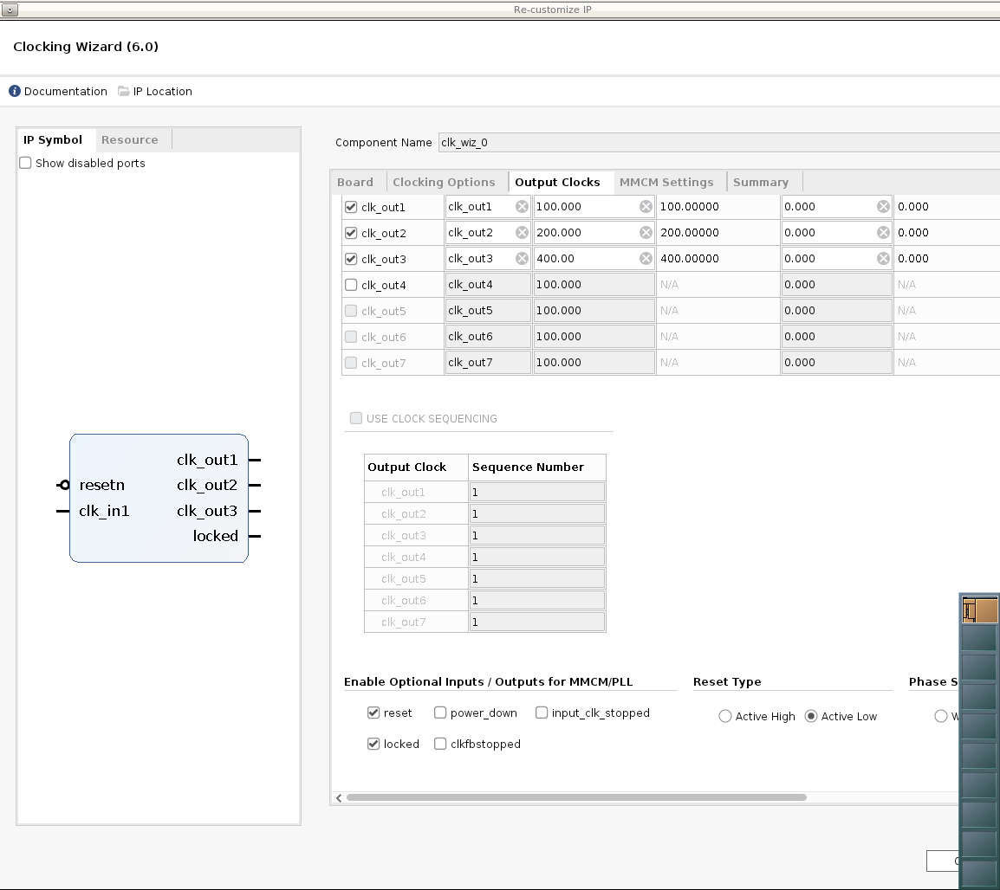

2021.1 Vitis™ Platform Creation TutorialsSee Vitis™ Development Environment on xilinx.com |
Step 1: Create the Vivado Hardware Design and Generate XSA¶
In this step, we will create the hardware design for the KV260 Vitis acceleration platform. We will start from a KV260 preset design, add platform required peripherals and configure them. After everything is set, we will export the hardware design to XSA.
Create Base Vivado Project from Preset¶
Launch Vivado
Run the following commands in Linux console.
source <Vitis_Install_Directory>/settings64.sh vivado &
Create a Vivado project named kv260_custom_platform.
Select File->Project->New, Click Next.
In Project Name dialog set Project name to kv260_custom_platform. Click Next.
Enable Project is an extensible Vitis platform. Click Next.

Select Boards tab
Click Refresh button to load the latest list of boards.
Select Kria KV260 Vision AI Starter Kit.
Click Next.
Review project summary and click Finish
Note: If you need to change an existing Vivado project to an extensible platform project, you can go to Settings in Flow Navigator in an opened Vivado design, go to General and enable project is an extensible Vitis platform
Create a block design.
In Project Manager, under IP INTEGRATOR, select Create Block Design.
(Optional) Change the design name to system.
Click OK.
Add MPSoC IP and run block automation to configure it.
Right click Diagram view and select Add IP.
Search for
zynqand then double-click the Zynq UltraScale+ MPSoC from the IP search results.Click the Run Block Automation link to apply the board presets. In the Run Block Automation dialog, ensure the following is check marked:
All Automation
Zynq_ultra_ps_e_0
Apply Board Presets
Click OK. You should get MPSoC block configured like below:
What Just Happened?
At this stage, the Vivado block automation has added a Zynq UltraScale+ MPSoC block and applied all board presets for the KV260. The presets includes MPSoC PS block configurations and pin assignments.
Customize System Design for Clock and Reset¶
V++ linker can automatically link the clock signals between kernel and platform. The available clock signals in the platform are exported by PFM.CLK property.
For simple designs, interrupt signals can be sourced by processor’s pl_clk. The limitation is that the processor has maximum 4 pl_clks and their phase is not aligned.
To supply more interrupt signals, or to supply phase aligned clocks, we can use Clocking Wizard.
We will add the Clocking Wizard to the block diagram and enable clock signals for the platform. Here are the detailed steps.
Add the clocking wizard block to generate three clocks:
Right click Diagram view and select Add IP.
Search for and add a Clocking Wizard from the IP Search dialog.
Double-click the clk_wiz_0 IP block to open the Re-Customize IP dialog box.
Click the Output Clocks tab.
Enable clk_out1 through clk_out3 in the Output Clock column. Set the Requested Output Freq as follows:
clk_out1 to 100 MHz
clk_out2 to 200 MHz
clk_out3 to 400 MHz
At the bottom of the dialog box set the Reset Type to Active Low.

Click OK to close the dialog.
Note: So now we have set up the clock system for our design. This clock wizard uses the pl_clk as input clock and generates clocks needed for the whole logic design. In this straightforward design, we would use 100MHz clock as the axi_lite control bus clock. 200MHz and 400MHz clocks are reserved for DPU AXI interface clock and DPU core clock during design linking phase. You are free to change the clock quantities and frequency to fit your target design. We will setup the clock export in future steps. Before that, we need to create reset signals for each clock because they are needed in clock export setup.
Add three Processor System Reset blocks corresponding to the three clocks:
Right click Diagram view and select Add IP.
Search for and add a Processor System Reset from the IP Search dialog
Rename the reset block to proc_sys_reset_1 so that it is easy to understand the relationship between reset modules and the clock signals.
Select the proc_sys_reset_1 block, type Ctrl-C and Ctrl-V to replicate two modules. They are named as proc_sys_reset_2 and proc_sys_reset_3 by default.
Connect Clocks and Resets:
Click Run Connection Automation, which will open a dialog that will help connect the proc_sys_reset blocks to the clocking wizard clock outputs.
Enable All Automation on the left side of the Run Connection Automation dialog box.
Select clk_in1 on clk_wiz_0 and set the Clock Source to /zynq_ultra_ps_e_0/pl_clk0.
For each proc_sys_reset instance, select the slowest_sync_clk, and set the Clock Source as follows:
proc_sys_reset_1 with /clk_wiz_0/clk_out1
proc_sys_reset_2 with /clk_wiz_0/clk_out2
proc_sys_reset_3 with /clk_wiz_0/clk_out3
On each proc_sys_reset instance, select the ext_reset_in, set Board Part Interface to Custom and set the Select Manual Source to /zynq_ultra_ps_e_0/pl_resetn0.
Make sure all checkboxes are enabled and click OK to close the dialog and create the connections.
Connect all the dcm_locked signals on each proc_sys_reset instance to the locked signal on clk_wiz_0.
Enable clocks for the platform
Go to Platform Setup tab. If it is not opened yet, use menu Window -> Platform Setup to open it.
Click Clock tab
Enable all clocks under clk_wiz_0: clk_out1, clk_out2, clk_out3
Change their ID to 0, 1 and 2
Set a default clock: click Is Default for clk_out2
After everything is setup, it should report Info: No problem with Clock interface.
Note:
There should be one and only one default clock in the platform. During v++ linker will use the default clock to connect the IP blocks if there are no user assignments for link configuration.
Add Interrupt Support¶
V++ linker can automatically link the interrupt signals between kernel and platform. The available interrupt signals in the platform are exported by PFM.IRQ property.
For simple designs, interrupt signals can be sourced by processor’s pl_ps_irq. The limitation is that it can only supply maximum 16 interrupt signals. To supply more interrupt signals, we can use AXI Interrupt Controller. We will enable AXI HPM0 LPD to control the AXI Interrupt Controller, add the AXI Interrupt Controller and enable interrupt signals for PFM.IRQ. Here are the detailed steps.
Enable AXI HPM0 LPD to control the AXI Interrupt Controller
In the block diagram, double-click the Zynq UltraScale+ MPSoC block.
Select PS-PL Configuration > PS-PL interfaces > Master interface.
Enable the AXI HPM0 LPD option.
Expand the arrow before AXI HPM0 LPD. Check the AXI HPM0 LPD Data width settings and keep it as default 32.
Disable AXI HPM0 FPD and AXI HPM1 FPD
Click OK to finish the configuration.
Note:
We use AXI HPM0 LPD for controlling purpose. It would read and write 32-bit control registers. If the interface is more than 32, AXI Interconnect or SmartConnect will do AXI bus width conversion using PL logic. It would cost logic resource and introduce unnecessary latency.
We reserve AXI HPM0 FPD and AXI HPM1 FPD for kernel usage. Disabling them from the block diagram can prevent auto connection to use it by accident. We can export the unused AXI interfaces in Platform Setup, no matter it is visible in the block diagram or not.
Add the AXI Interrupt Controller and configure it
Right click Diagram view and select Add IP, search and add AXI Interrupt Controller IP. It is instantiated as axi_intc_0.
Double click the AXI Interrupt Controller block, change Interrupt Output Connection to Single so that it can be connected to PS IRQ interface.
Click OK.
Connect AXI Interfaces of axi_intc_0 to AXI HPM0 LPD of PS
Click Run Connection Automation
Review the settings (axi_intc_0 is enabled, s_axi Master interface is to be connect to /zynq_ultra_ps_e_0/M_AXI_HPM0_LPD)
Set Clock Source for Slave Interface and Clock Source for Master Interface to /clk_wiz_0/clk_out2(200 MHz)
Click OK
Note:
We wish interrupt controller and most kernel IRQ signals are synchronous to one clock. It is best for stability. But do not worry about the asynchronous IRQ if kernels are running at different clocks. The interrupt controller can manage asynchronous IRQ with level interrupt signals as well.
Connect irq of the Interrupt Controller
Connect axi_intc_0.irq to zynq_ultra_ps_e_0.pl_ps_irq[0:0]
Note:
If you have more than one irq signals to connect to pl_ps_irq of PS, use a concat IP to concatenate them to a bus and then connect the bus to pl_ps_irq.
Enable interrupt signals for the platform.
Go to Platform Setup tab
Go to Interrupt tab
Enable intr under axi_intc_0
Tcl console shows the corresponding tcl command for this setup:
The IPI design connection would like below till now:
Enable AXI Interfaces for the Platform¶
Enable AXI Master interfaces from PS
Go to Platform Setup tab
Go to AXI Port tab in Platform Setup
Under zynq_ultra_ps_e_0, enable M_AXI_HPM0_FPD and M_AXI_HPM1_FPD. Keep the Memport and sptag default to M_AXI_GP and empty.
Note:
M_AXI_GP means general purpose AXI Master interface
sptag is only applicable to AXI slave interfaces.
v++ linker will instantiate AXI Interconnect automatically to connect between PS AXI Master interfaces and slave interfaces of acceleration kernels. One AXI Master interface will connect up to 16 kernels.
Enable AXI Master interfaces from AXI Interconnect
Under ps8_0_axi_periph, click M01_AXI, press Shift and click M07_AXI to multi-select master interfaces from M01_AXI to M07_AXI.
Right click the selection and click on Enable.
Keep the Memport and sptag default to M_AXI_GP and empty.
Note:
v++ will not cascade another level of AXI Interconnect if the AXI master interface is exported from AXI Interconnect IP.
AXI Master interfaces from PS and AXI Interconnect are functionally equivalent to the platform.
In general, platform designer should export as many as AXI interfaces to the platform. Application developer should decide which interface to use.
Enable AXI Slave interfaces from PS to allow kernels access DDR memory
Under zynq_ultra_ps_e_0, multi-select all AXI slave interfaces: press Ctrl and click S_AXI_HPC0_FPD, S_AXI_HPC1_FPD, S_AXI_HP0_FPD, S_AXI_HP1_FPD, S_AXI_HP2_FPD, S_AXI_HP3_FPD.
Right click the selections and select enable.
Change Memport of S_AXI_HPC0_FPD and S_AXI_HPC1_FPD to S_AXI_HP because we will not use any coherent features for these interfaces.
Type in simple sptag names for these interfaces so that they can be selected by v++ configuration during linking phase. HPC0, HPC1, HP0, HP1, HP2, HP3.

Emulation Setup (Optional)¶
This step is only needed when creating an emulation-capable platform.
When a component comes with multiple types of simulation models, selecting SystemC TLM (Transaction-level Modeling) model would run much faster than RTL model. For Processing System component, it is mandatory to use TLM for Hardware Emulation.
Change PS simulation model to tlm
Select the PS instance zynq_ultra_ps_e_0 in the block diagram
check the Block Properties window.
In Properties tab, it shows
ALLOWED_SIM_MODELS=tlm,rtl. It means this component supports two types of simulation models.Scroll down to
SELECTED_SIM_MODELproperty. Change it from rtl to tlm to select to use TLM model.
Export Hardware XSA¶
Validate the block design
Click the Validate Design button in the block design Diagram window
Note: During validation, Vivado reports a critical warning that /axi_intc_0/intr is not connected. This warning can be safely ignored because v++ linker will link kernel interrupt signals to this floating intr signal.
CRITICAL WARNING: [BD 41-759] The input pins (listed below) are either not connected or do not have a source port, and they do not have a tie-off specified. These pins are tied-off to all 0's to avoid error in Implementation flow. Please check your design and connect them as needed: /axi_intc_0/intr
Create a top module wrapper for the block design
In Source tab, right click system.bd in Design Sources group
Select Create HDL Wrapper…
Select Let Vivado manage wrapper and auto-update.
Click OK to generate wrapper for block design.
Generate the design
Select Generate Block Design from Flow Navigator
Select Synthesis Options to Global. It will skip IP synthesis during generation.
Click Generate.
Click Generate Bitstream in Flow Navigator window.
Click Yes.
Export the platform
Click menu File -> Export -> Export Platform to launch the Export Hardware Platform wizard. This wizard can also be launched by Export Platform button in Flow Navigator or Platform Setup window.
Click Next in the first information page.
Select Platform Type: Hardware and Hardware Emulation, click Next. If you skipped the emulation setup previously, select Hardware here.
Select Platform State: Pre-synthesis, enable Include Bitstream, click Next
Input Platform Properties and click Next. For example,
Name: kv260_custom_platform
Vendor: xilinx
Board: kv260
Version: 0.0
Description: This platform provides high PS DDR bandwidth and three clocks: 100MHz, 200MHz and 400MHz.
Fill in XSA file name: kv260_custom_platform and keep the export directory as default.
Click Finish.
kv260_custom_platform.xsa will be generated. The export path is reported in the Tcl console.
Note: We enable Include Bitstream to fulfill the requirement of the fpga-manager-util package in PetaLinux.
Alternatively, the above export can be done in Tcl scripts
# Setting platform properties set_property platform.default_output_type "sd_card" [current_project] set_property platform.design_intent.embedded "true" [current_project] set_property platform.design_intent.server_managed "false" [current_project] set_property platform.design_intent.external_host "false" [current_project] set_property platform.design_intent.datacenter "false" [current_project] # Write pre-synthesis expandable XSA write_hw_platform -include_bit -force -file ./kv260_custom_platform.xsa
Next Step¶
Now we finish the Hardware platform creation flow, then we should go to the Step2: Software platform creation
Copyright© 2021 Xilinx